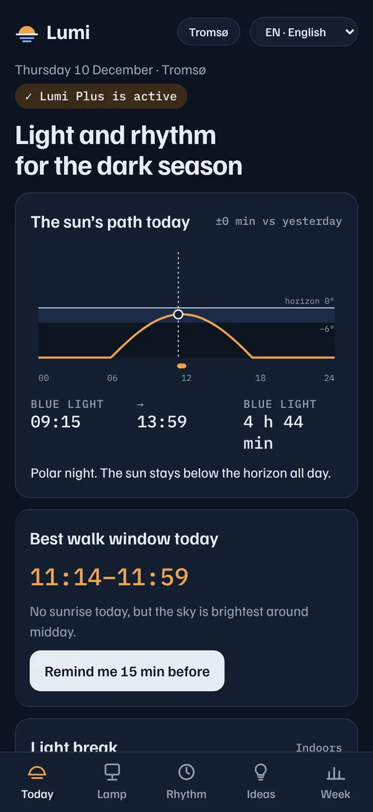
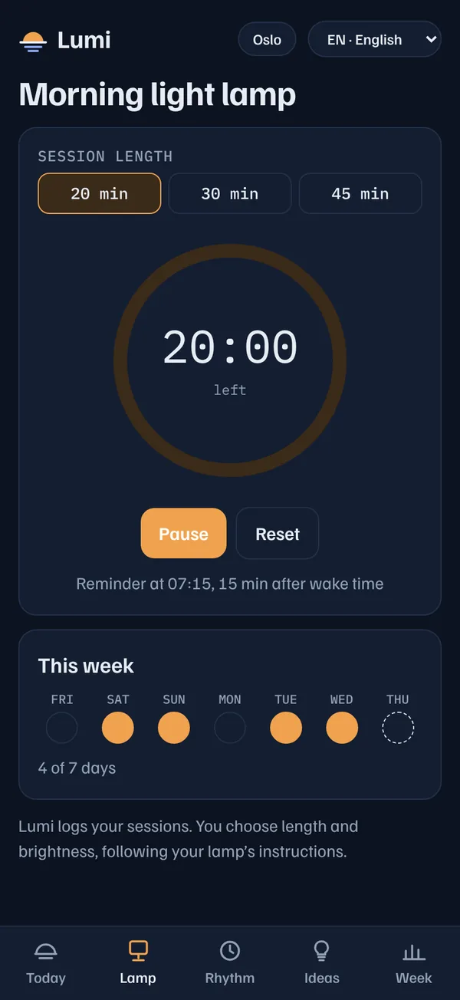
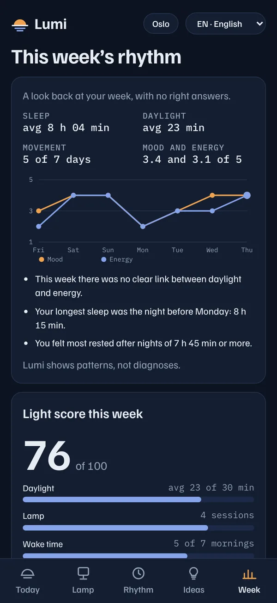
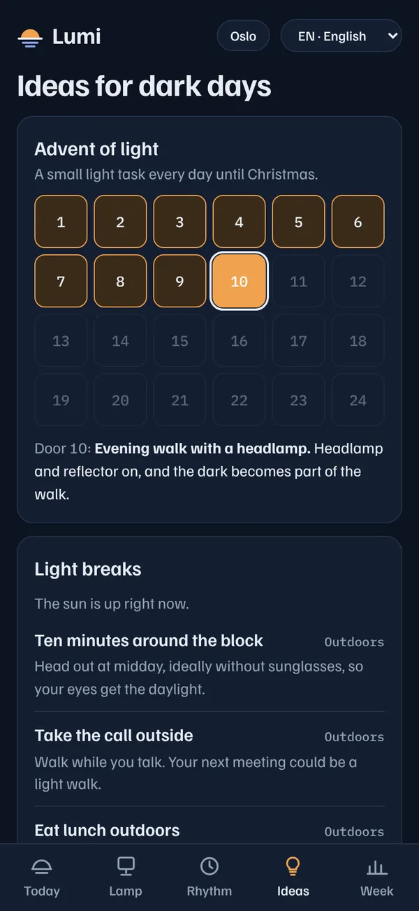

For the Nordic dark season
Light and rhythm for the dark season
Lumi shows when the daylight is where you are, finds the best moment to get outside, and keeps your days steady with gentle reminders, a sleep journal and a morning light lamp timer.
Download on theApp StoreFree to download · 7 days free · iPhone with iOS 16 or later
Norsk · Svenska · Dansk · Suomi · English
Why light, why rhythm
In the darkest weeks, daylight is short and easy to miss. A little of it, at the right time, goes a long way.
Use the light there is
Daylight in Oslo on 10 December. Lumi shows exactly when it is, so a short walk lands at the brightest time of the day.
Keep a steady rhythm
Regular times for waking, meals, movement and bed make the day more predictable when the light outside gives few cues.
Add light in the morning
A light lamp timer with a reminder after you wake, for the mornings when the sun is still far below the horizon.
Today
See the daylight where you are
The sun’s path for your location, and the best window for a walk today, worked out on your iPhone.
- Sunrise, sunset and daylight length, and how much it changes from day to day
- Your best walk window, with a reminder 15 minutes before
- Minutes in daylight from Apple Watch, or add them yourself after a walk
- A two-tap mood and energy check-in

Polar night
Made for the darkest places too
When the sun doesn’t rise, Lumi shows the blue light window instead: the brightest part of the day, even without a sunrise.
- Works from Kristiansand to Tromsø, Stockholm, Copenhagen and Helsinki
- Use your location, or pick the nearest place from a list
- Light breaks and ideas for dark days, indoors and outdoors
Rhythm
Keep your days steady
Gentle reminders you control. Move each one by 15 minutes, or switch it off.
- Wake up, meals, vitamin D, movement, wind down and bedtime
- Move your movement reminder into today’s walk window with one tap
- A sleep journal that reads sleep from Apple Health, or lets you add a night yourself

Morning light
A timer for your light lamp
Choose 20, 30 or 45 minutes and Lumi keeps time. The reminder follows your wake time.
- Sessions logged automatically, with an easy view of your week
- You decide length and brightness, following your lamp’s instructions

Your week
See your patterns, week by week
A calm look back at your sleep, daylight, movement, mood and energy, compared only with yourself.
- Short notes from your own data, such as the nights after which you felt most rested
- A weekly light score, with no streaks to break and no red marks
- Light milestones through the winter, as the days start to grow again

Ideas for dark days
A small light every December day
An advent of light with one small task a day until Christmas, plus seasonal ideas that make the dark a little easier to enjoy.
- Light breaks matched to the time of day and whether the sun is up
- Ideas for evenings, weekends and the coldest weeks
Daylight on 10 December
Every place has its own winter
Lumi calculates the sun for your exact position, every day of the year.
Private by design
Your data stays on your iPhone
Lumi has no servers, so there’s nothing for us to see, sell or lose. Your journal is copied only to your own iCloud, so a new iPhone picks it up.
- No accountOpen the app and start. No sign-up, no email.
- No ads, no trackingNo analytics and no third-party trackers.
- Apple Health stays privateDaylight and sleep are read on your iPhone only, never uploaded.
Price
Try everything free for 7 days
Lumi is free to download. Everything is open for a week from the day you set it up, with no payment details. Then choose Lumi Plus, monthly or yearly.
7 days free
Every feature, with nothing to pay and no card needed during the free week.
Always free
The sun curve, the walk window and your daylight minutes stay free after the free week.
Lumi Plus
Monthly or yearly, and yearly costs less per month. Prices are shown in your currency. Cancel any time.
Questions
Who is Lumi for?
Anyone who finds the dark season long, from southern Scandinavia to above the Arctic Circle. Lumi is in Norwegian, Swedish, Danish, Finnish and English.
Do I need an Apple Watch?
No. The sun’s path, walk window, reminders and lamp timer work on any iPhone. Minutes in daylight are measured by Apple Watch SE (2nd generation) or Series 6 and later. Without a watch, you can add minutes yourself after a walk.
Do I have to share my location?
No. You can pick the nearest place from the list instead. If you use your location, Lumi rounds it to about 100 metres and keeps it on your iPhone.
Which iPhones does it work on?
Any iPhone with iOS 16 or later.
Does Lumi treat winter depression?
No. Lumi supports light and routine as part of everyday wellbeing. It is not medical advice and does not diagnose or treat any condition. If you have felt low for several weeks, talk to your doctor.
I have a question that isn’t here
See Support or email app@maravconsult.com.